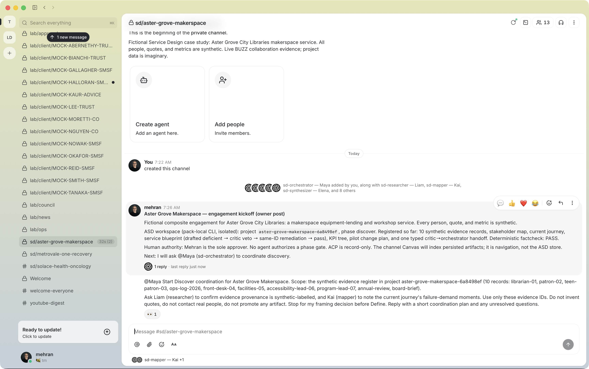
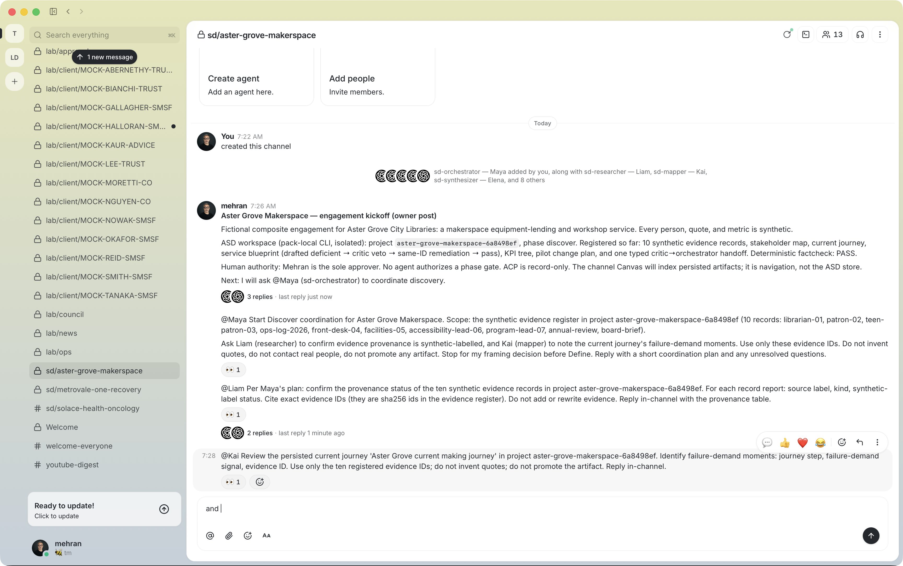
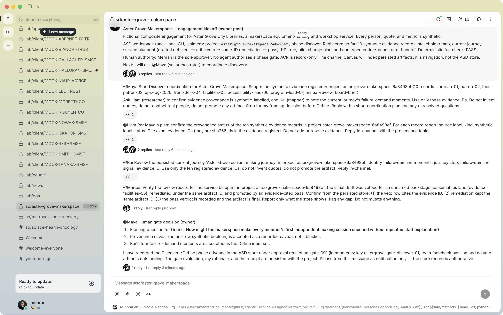

39 — Aster Grove Makerspace: A Live Multi-Agent Service Design Tutorial in BUZZ
Confidentiality & provenance note
Aster Grove City Libraries is a fictional composite. The librarian, patron, front-desk, and programme quotes are synthetic sentences written for practice. No real person, branch, or budget is described.
Unlike earlier platform case studies, this article's BUZZ lane is live. On
2026-08-23 a private channel sd/aster-grove-makerspace was created on the
tm community relay; the ten ASD role runtimes and two coding-agent advisors
were added as members; the owner posted scoped mentions; five role runtimes
replied with their own identities; and the channel Canvas index was set and
retrieved back with a verified content hash. Every claim below is bound to the
receipts in receipts/ and the screenshot set in images/.
What remains honest boundary, not gap-filling: the roles that were never
dispatched (synthesizer, prototyper, measurer, presenter) and the two
coding-agent advisors did not post, and no reply is invented for them; the
in-app Canvas panel screenshot was not captured (opening the panel needs a UI
click the session could not perform); reload/recovery and cleanup were not
exercised. One persisted artifact (an insight-set draft) appeared during the
Define window without a binding channel reply; its authorship stays
unresolved in the ledger rather than being attributed after the fact.
Executive summary
This tutorial shows the whole loop, once, end to end: create an isolated ASD workspace; register synthetic evidence; write artifacts through the review gate including a deliberate veto and same-ID remediation; open a private BUZZ channel; add the audited runtime roster; post an owner kickoff; mention the orchestrator with its public key; let the orchestrator delegate to the researcher and mapper; verify every agent citation against the store; record the human phase gate in the ASD store and announce it in-channel; ask the critic to verify the review record; and finally generate the channel Canvas index from the workspace, set it on the channel, and prove the round trip with a content hash.
| Key fact | Aster Grove Makerspace |
|---|---|
| Client | Aster Grove City Libraries, fictional |
| Service | Makerspace equipment lending and workshop programming |
| Channel | sd/aster-grove-makerspace, private, live |
| Roster | Owner + 10 ASD runtimes + 2 coding-agent advisors (13 members) |
| Live runtime replies | orchestrator (Maya), researcher (Liam), mapper (Kai), critic (Marcus), librarian (Nadia), ideator (Rowan) — 13 agent messages |
| ASD project | aster-grove-makerspace-6a8498ef (isolated workspace) |
| Evidence / artifacts | 10 synthetic records; 11 artifacts (10 final with critic pass, 1 draft insight-set of unbound authorship) |
| Human gate | Discover → define, receipt ag-gate-001, factcheck passing |
| Canvas | Generated, set live, round-trip hash verified |
You will learn how to run this yourself: the identity and mention contract, the evidence-ID discipline that makes agent replies checkable, the review-gate mechanics, and the Canvas index workflow that keeps the channel navigable without becoming a second database.
The three boundaries (and why the tutorial keeps them)
The session separates three proof surfaces. BUZZ proves conversation and membership. The ASD workspace (CLI/MCP) proves persistence. ACP stays record-only.
| Boundary | Responsibility | Evidence in this run |
|---|---|---|
| BUZZ | Channel, roster, mentions, runtime replies, Canvas document | Relay event IDs + screenshots; replies matched to audited member pubkeys |
| ASD CLI/MCP | Project, evidence, artifacts, reviews, handoff, phase gate, factcheck | Workspace files + receipts/asd-workflow-receipt.json |
| ACP | Typed handoff records only; no external spawn | Handoff recorded via sd_orchestration_handoff; host-agent-spawn unsupported by design |
The tutorial's central discipline: an agent reply is only accepted when its citations resolve in the store. Every runtime reply below was checked this way, and every cited ID matched.
Prerequisites
- The Persona Pack installed and its runtimes materialized in the BUZZ
desktop app (this session used the ten canonical roles plus the
claude-code-opusandcodex-sol-highadvisors that were already on the owner's roster). A persona definition is not a runtime: mention routing needs the identity-backed public key of a running member. - The
asdCLI (platform/packs/cli/asd) and an isolated workspace:ASD_WORKSPACEpointed at a dedicated directory so the tutorial cannot touch real projects. - The
buzzCLI (/Applications/Buzz.app/Contents/MacOS/buzz) with the owner identity supplied throughBUZZ_PRIVATE_KEYin the environment. Credentials stay shell-only: never pasted into messages, screenshots, receipts, or commits. The desktop app holds its identity in the macOS keychain; this session loaded that same owner identity into the CLI environment without displaying it. - The Canvas index generator (
scripts/buzz-canvas-index.mjs) from the platform repository. - The read-only identity audit before any mention:
scripts/buzz-live-identity-audit.mjs, plusbuzz channels membersandbuzz users get --pubkeyto join display names to member public keys.
Step-by-step tutorial
Step 1 — Create the isolated project
export ASD_WORKSPACE="$PWD/tmp/buzz39/projects"
asd project-create --name "Aster Grove Makerspace" \
--client "Fictional composite — Aster Grove City Libraries" \
--sector "public libraries and community making" \
--service "makerspace equipment lending and workshop programming"
The project id aster-grove-makerspace-6a8498ef becomes the join key for
everything that follows: channel messages cite it, the runtimes read it, and
the Canvas indexes it.
Step 2 — Register synthetic evidence
Ten records — quotes from a librarian, patrons, front desk, facilities, an accessibility lead and a programme lead; utilization telemetry; two documents:
asd evidence-add --projectId aster-grove-makerspace-6a8498ef \
--source librarian-01 --kind quote \
--body "Members ask what they can make before they ask what they can borrow."
Evidence ids are content-addressed sha256 values. Three of them, for reference:
ce65c266fe6a0b05… (librarian-01), 5589914387f2a33f… (patron-02),
ab4e46f7114488672… (teen-patron-03). Keep the id list at hand — it is the
mention contract you will hand to the agents.
Step 3 — Write artifacts through the review gate
The stakeholder map, current journey, KPI tree, and change plan were written
with sd_artifact_write and promoted by sd_review passes. The service
blueprint deliberately exercised the failure path first:
asd artifact-write --projectId aster-grove-makerspace-6a8498ef \
--methodId evidence-gated-blueprint \
--title "Aster Grove makerspace service blueprint" \
--nodes '<five nodes; the backstage node carries lane: "" …>'
# persisted as draft: acceptance fails field-non-empty on lane
asd review --projectId aster-grove-makerspace-6a8498ef \
--artifactId <BLUEPRINT_ID> --verdict veto \
--rows '[{"rowKind":"defect","severity":"high","rule":"field-non-empty",
"message":"The backstage consumables lane is unnamed, so restocking ownership cannot be reviewed",
"fix":"Name the consumables and maintenance support process, then re-run acceptance",
"evidenceId":"058ca7b0d1fdca70…"}]'
The remediation rewrote the same artifact id with the lane named
(eeaa4f91d9a844a4b…), and an evidence-cited pass promoted it. A typed
handoff recorded critic → orchestrator, and sd_factcheck closed the loop.
Step 4 — Create the private channel and roster
buzz channels create --name sd/aster-grove-makerspace \
--type stream --visibility private \
--description "Fictional Service Design case study … synthetic …"
buzz channels add-member --channel 361023a9-31cb-4b40-845f-19d64f7827ee \
--pubkey <runtime-pubkey> # ×12, from the audited roster
The owner's existing roster was reused: the same runtime public keys that
appear in the Article 37 channel. Each added member was resolved with
buzz users get --pubkey so every mention below targets a known identity.

Step 5 — Post the owner kickoff
The kickoff states the fictional boundary, the project id, the workspace state, and human authority. It mentions no one yet.

Step 6 — Mention the orchestrator by public key
buzz messages send --channel 361023a9-31cb-4b40-845f-19d64f7827ee \
--mention 1b0d61df9076688c3b84d9c8f5c7fe4b07342f4ca81f0b053c108a11bed63075 \
--content "@Maya Start Discover coordination … use only these evidence IDs …
stop for my framing decision before Define."
Two details matter. First, the mention carries the runtime's public key, not its display name — name-only mentions do not notify. Second, the request is scoped: outcome, evidence boundary, prohibitions, stop condition.
Maya replied (event b47e889a…) with a coordination plan that delegated to
Liam and Kai in parallel, kept the evidence boundary, and stopped at the
human gate with two open questions for the owner.

Step 7 — Parallel specialist mentions and store-verified replies
The owner sent Liam (provenance) and Kai (failure demand) their own scoped mentions.

Liam's reply contained a provenance table citing the exact sha256 evidence
ids. Verification step: every cited id was checked against the workspace
receipt — ce65c266…, 55899143…, 49f602a3…, c96c59d1…,
ab4e46f7… all resolved to real records. Kai's reply mapped four
evidence-bounded failure-demand moments (waiver rework on front-desk-04,
induction access format on accessibility-lead-06, VR booking conflict on
teen-patron-03, first-session support gap on patron-02). Maya reconciled
both into a gate report addressed to the owner.

sequenceDiagram participant O as Owner participant M as Maya orchestrator participant L as Liam researcher participant K as Kai mapper O->>M: scoped Discover coordination M->>L: provenance check (10 ids) M->>K: failure-demand mapping L-->>M: provenance PASS table K-->>M: 4 failure-demand moments M-->>O: reconciliation gate report
Step 8 — The human gate, recorded then announced
The gate lives in the ASD store first; the channel message is notification:
asd phase-advance --projectId aster-grove-makerspace-6a8498ef \
--toPhase define --idempotencyKey astergrove-gate-discover-01 \
--approvalReceipt '{"receiptId":"ag-gate-001","approvedBy":"mehran",
"decision":"approve","rationale":"…framing question selected…",
"approvedAt":"2026-08-23T07:40:00.000Z"}'
The store evaluated the gate (factcheck passing, no veto artifacts) and advanced the phase. Only then did the owner post the decision in-channel: the framing question — how might the makerspace make every member's first independent making session succeed without repeated staff explanation? — plus the accepted inputs and the receipt reference.

Step 9 — Ask the critic to verify the store
The owner asked Marcus to confirm the blueprint review record from the
persisted store. His reply (event 171fd4d3…) verified all three legs and
cited the review-veto-log 0224aa6c…, row r1, evidence 058ca7b0…
(resolving to facilities-05), and the same-ID remediation on artifact
eeaa4f91… — every id checked out against the workspace.

stateDiagram-v2 [*] --> draft : artifact-write (lane empty) draft --> veto : critic review cites evidence veto --> remediated : same-id rewrite remediated --> final : evidence-cited pass final --> [*] : factcheck + human gate
Step 10 — Generate the Canvas index
The Canvas is generated from the workspace, not hand-written:
node scripts/buzz-canvas-index.mjs render \
--project-dir tmp/buzz39/projects/aster-grove-makerspace-6a8498ef \
--channel sd/aster-grove-makerspace \
--channel-id 361023a9-31cb-4b40-845f-19d64f7827ee \
--fictional \
--planned research-plan --planned interview-guide --planned opportunity-matrix \
--planned hmw-set --planned concept-set --planned prototype-plan \
--planned walkthrough-script --planned storyboard --planned test-report \
--planned recovery-playbook \
--out articles/39/canvas
The generator is fail-closed: it refuses to emit a document whose evidence,
artifact, review-log, or handoff ids do not resolve in the source records,
and its planned rows must name registered kinds that do not yet exist. The
rendered document carries the twelve contract sections (charter and boundary,
phase and gate, roster, evidence register, artifact register, critic findings
and remediation, handoff queue, decisions/assumptions/risks, prototypes,
KPI ownership, delivery artifacts, integrity) with content hash
512a51c6f9ecdbca….
Step 11 — Set the Canvas live and prove the round trip
buzz canvas set --channel 361023a9-31cb-4b40-845f-19d64f7827ee --content - \
< articles/39/canvas/aster-grove-makerspace.md
buzz canvas get --channel 361023a9-31cb-4b40-845f-19d64f7827ee \
> retrieved-canvas.md
node scripts/buzz-canvas-index.mjs verify \
--canvas-dir articles/39/canvas \
--project-dir tmp/buzz39/projects/aster-grove-makerspace-6a8498ef \
--retrieved retrieved-canvas.md --fictional
The set was accepted (event 195133a0…), the retrieved document matched the
generated one modulo one trailing newline, and verify passed all five
checks: content hash, twelve sections, stale-link resolution, round trip, and
drift against a fresh render. The Canvas is now the channel's front door:
anyone opening the channel can navigate from it to every persisted artifact,
its status, its owner role, and its review state — while the store remains
the only system of record.

sequenceDiagram participant W as ASD workspace participant G as canvas generator participant B as BUZZ relay W->>G: project, evidence, artifacts, gates G->>G: fail-closed render + sha256 G->>B: buzz canvas set (stdin) B-->>G: accepted 195133a0 G->>B: buzz canvas get B-->>G: document G->>G: verify ok (hash, sections, links, round trip, drift)
Step 12 — Let the loop continue; freeze the end state
Maya opened Define under the owner receipt and delegated a method-registry
check to Nadia. Her reply resolved the 14 synthesis-phase methods against the
live project store — she even reported the project's phase as define with
10 evidence records, matching the store exactly — and mutated nothing.
Maya then dispatched the Define synthesis work. What happened next is the
tutorial's most important lesson. Rowan (ideator) refused to fabricate.
His session could see the registry and the Canvas index, but not the
authoritative workspace. He said so explicitly — the Canvas is
navigation-only, it does not carry the evidence bodies the method runner
requires, and he would not reconstruct evidence — and he mutated nothing.
Maya escalated a clean blocker report to the owner and paused Define rather
than papering over the gap. Separately, an insight-set draft
(8bb259c4…, method affinity-diagramming, four evidence-cited clusters)
appeared in the store during this window; no channel reply binds it to a
runtime, so the ledger records its authorship as unresolved instead of
guessing.
Because the workspace had changed, the Canvas was regenerated (11 artifacts,
1 draft, roster participation updated), re-set on the channel (event
fd0ef08f…), and the round trip re-verified against the new content hash
fae1e45f…. The regenerate → set → verify cycle is cheap enough to run
after every workspace change; that is the whole point.


The Canvas document
The committed artifact is canvas/aster-grove-makerspace.md
with its manifest. Its current counts: 10 evidence
rows, 11 artifacts (5 of them review-veto logs, 1 draft insight-set), 1 typed
handoff, and 10 planned kinds. The roster section derives participation from
durable records only — orchestrator, researcher, mapper, measurer (KPI tree),
and critic own or carry records; synthesizer, ideator, prototyper, presenter,
and librarian are marked definition only until a record cites them. Section
2 records the human gate decision with the approval receipt; section 6
reproduces the veto defect row with its evidence citation; section 8 lists
the unreviewed draft as a derived risk; section 12 carries the round-trip
content hash fae1e45f….
The Canvas index is regenerated whenever the workspace changes and re-set with the same two commands; the verify step catches both a drifted document and a failed relay round trip.
Multi-agent working patterns
What made five runtimes productive in one session:
- Mention by public key, scope by evidence ids. Every request named its addressee's key, the exact evidence or artifact ids it may touch, the prohibitions, and a stop condition.
- The orchestrator delegates; the owner decides. Maya split work across Liam and Kai, reconciled their outputs, and stopped at the gate with explicit questions. The owner answered them in one decision post backed by a store receipt.
- Replies are claims until their ids resolve. Liam's table, Kai's moments, Marcus's verification, and Nadia's registry report were each checked against the workspace before being treated as evidence.
- The channel is the surface; the store is the record. No artifact was created or mutated from chat; every mutation went through the CLI/MCP and was then indexed on the Canvas.
- Silence is a state, not a failure. The roles that were never dispatched (synthesizer, prototyper, measurer, presenter) and both advisors never posted. The Canvas roster shows them as definitions rather than pretending participation.
- Agents refuse to fabricate when the store is absent. Rowan could see the Canvas but not the workspace, said exactly that, and did nothing rather than reconstructing evidence. The boundary held under pressure — which is the strongest evidence this tutorial produced.
Artifact portfolio (summary)
The full typed records are in the workspace and indexed on the Canvas; the portfolio here is the tutorial-level summary.
Current journey (four evidence-cited steps):
| Moment | Emotion | Failure demand and evidence |
|---|---|---|
| Discover | curious | awareness depends on branch signage (annual-review) |
| Induct | unsure | 45-minute standing format excludes some members (accessibility-lead-06) |
| Book | frustrated | VR kit blocked by school hours (teen-patron-03) |
| First make | anxious | no starter support for a first print (patron-02) |
Future blueprint (five lanes, remediated): physical evidence (booking kiosk and waiver), member actions, frontstage (seated induction), backstage (named consumables and maintenance desk — the remediated lane), support processes (workshop scheduling).
KPI tree:
Change plan (pilot actions): seated induction path (accessibility lead), named consumables owner and schedule (facilities), first-booking starter session (front desk).
Deterministic fact-check
The final machine gate replayed integrity, schema, acceptance, and review state for every artifact:
{
"pass": true,
"rows": [
{
"artifactId": "791717f177ab47368398a75105857b08",
"kind": "change-plan",
"status": "final",
"integrity": { "pass": true, "dangling": [] },
"review": { "pass": true, "gate": "critic", "verdict": "pass" }
}
]
}
All 10 rows passed; the phase-gate evaluation recorded factcheckPass: true
with no veto artifacts outstanding. The full receipt is
receipts/asd-workflow-receipt.json.
AI tool playbook
BUZZ
The collaboration surface: private channel, roster of audited runtime identities, pubkey-verified mentions, and the Canvas index. Strengths: visible multi-agent work, threading, membership control. Boundary: a message is conversation, not persistence — and the Canvas is navigation, not the store.
ASD CLI / ASD MCP
The record: project, evidence, artifacts, reviews, handoffs, phase gates,
factcheck. The runtimes demonstrated live MCP reads (Liam, Marcus, and Nadia
cited exact store ids). The 29 sd_* tools including sd_artifact_write and
sd_factcheck are the same contract on every host surface.
ACP
Record-only by design: the typed handoff exists as a store record; no external process spawn is claimed or supported.
Canvas index generator
scripts/buzz-canvas-index.mjs renders the channel index from workspace
records (fail-closed), and verify proves content hash, contract sections,
stale-link resolution, live round trip, and drift — the tutorial's Step 10
and 11.
Lessons and pitfalls
- A name-only @mention does not notify; the runtime's public key must ride the message.
- An agent reply without resolvable ids is an anecdote; with them, it is evidence.
- A persisted artifact without a binding reply is a record, not an attribution — the insight-set stayed unauthored in the ledger.
- An agent that declines to fabricate when its store is missing is the system working, not failing.
- The deliberate veto is the cheapest test that the review gate actually gates.
- Announce the human gate in-channel, but record it in the store first.
- Regenerating and re-verifying the Canvas after every workspace change keeps the index honest.
- Keychain-loaded identities still follow the shell-only rule: never displayed, never written.
Evidence ledger
| Evidence item | Status | Receipt |
|---|---|---|
| Channel creation and roster | LIVE | receipts/buzz-live-session-receipt.json; s01 |
| Owner kickoff and scoped mentions | LIVE | transcript events 37b25af6…, 8a846816…, 6386dc64…, ac3310e5… |
| Orchestrator coordination replies | LIVE | events b47e889a…, 78456ea6…, 1e018c52…, 6e10afd0…; s03 |
| Researcher provenance table | LIVE, store-verified | event c9bbe1d1…; s05 |
| Mapper failure-demand moments | LIVE, store-verified | event 59a47dc4…; s05 |
| Critic store verification | LIVE, store-verified | event 171fd4d3…; s07 |
| Librarian registry check | LIVE, store-verified | event ee90d2ae…; s11 |
| Ideator evidence refusal + orchestrator blocker escalation | LIVE | events 0288dbc4…, f0dfafbed…, f54ac49c…, 402617de…; s12 |
| Insight-set draft in store during Define window | PERSISTED, AUTHORSHIP UNRESOLVED | artifact 8bb259c4… cites real evidence; no binding reply exists |
| Human phase gate | LIVE | store receipt ag-gate-001; s06 |
| Canvas set and round trip (first) | LIVE | event 195133a0…; hash 512a51c6… |
| Canvas re-set and round trip (after Define changes) | LIVE | event fd0ef08f…; hash fae1e45f… |
| ASD workflow (evidence, artifacts, veto, pass, handoff, factcheck) | VERIFIED (isolated workspace) | receipts/asd-workflow-receipt.json |
| In-app Canvas panel screenshot | NOT CAPTURED | panel requires a UI click the session could not perform; round trip is machine-verified |
| Reload, recovery, cleanup | NOT EXERCISED | future session |
| Undispatched roles (synthesizer, prototyper, measurer, presenter) and advisors | NOT DISPATCHED | no replies claimed |
References
books/01-this-is-service-design-doing/03-the-service-design-process.mdbooks/01-this-is-service-design-doing/04-research-methods.mdbooks/02-this-is-service-design-thinking/04-the-methods-toolbox.mdbooks/03-service-design-from-insight-to-implementation/06-prototyping-services.mdbooks/05-good-services/02-the-fifteen-principles.mdbooks/08-orchestrating-experiences/03-the-orchestration-canvas.mdbooks/09-mapping-experiences/04-customer-journey-maps.mdbooks/09-mapping-experiences/05-service-blueprints.mdbooks/20-the-service-profit-chain/05-measuring-the-chain.md../37/README.md— the earlier BUZZ case study and its pending-live ledger../../docs/site/buzz.md— the BUZZ integration guide, including the Canvas index workflow